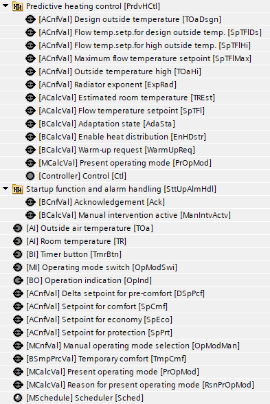
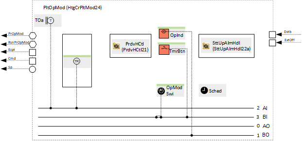
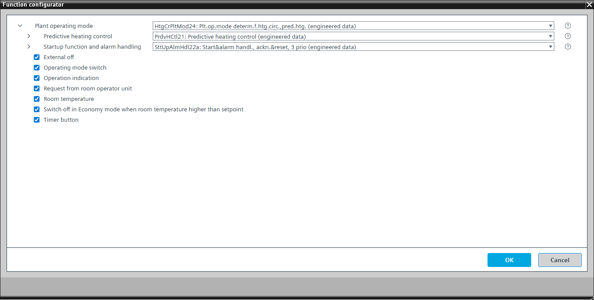

[HtgCrPltMod24] Plant operating mode determination for heating circuit, for predictive room heating
Program block, name / node subtype: [HtgCrPltMod24] Plant operating mode determination for heating circuit, for predictive room heating
Library hierarchy: Heating equipment
Family: HcrPltMod
Project tree | Diagram |
|---|---|
 |  |
Configurator


Program blocks are stored in the library without I/Os. Use the auto-create and auto-connect functions to create I/Os and/or to connect them to the interface blocks, e.g., R_A, CMD_B. Alternatively, take the I/Os from the folder containing the predefined I/Os in the library and/or from the plant and connect them to the interface blocks.
Function
Determines the plant operating mode from multiple sources (e.g., scheduler, manual operation, room unit), provides a flow temperature setpoint to a hydraulic circuit, and switches it on or off.
The program block is for plants with model predictive heating control algorithm.
Possible operating modes
Operating mode | Description |
|---|---|
Protection | The hydraulic circuit is off (the pump is off and the valve is closed). The room setpoint for Protection is active when the optional "Room temperature" is enabled. |
Economy | The hydraulic circuit is on (the pump is on and the valve follows the output of the temperature controller). The room setpoint for Economy is active. |
Pre-Comfort | The hydraulic circuit is on (the pump is on and the valve follows the output of the temperature controller). The room setpoint for Pre-Comfort (calculated from the room setpoint for Comfort minus the delta setpoint for Pre-Comfort) is active. |
Comfort | The hydraulic circuit is on (the pump is on and the valve follows the output of the temperature controller). The room setpoint for Comfort is active. |
Off | The hydraulic circuit is off (the pump is off and the valve is closed). The room setpoint for Protection is inactive when the optional "Room temperature" is enabled. This operating mode is only active for a very short time during startup after power on or if the parameter for the function that prevents the plant from running is switched on. |
The operating mode is shown on BACnet with a multistate calculated value "Present operating mode" with the states "Protection", "Economy", "Pre-Comfort", "Comfort", and "Off".
A parameter in the program is preset to prevent the plant from running. This is useful for testing data points. It must be switched off to start the plant.
"Startup function and alarm handling" controls the startup behavior of the plant after power-on. There is a delay after startup, "DlySttUp", of about 50 seconds. Do not change this delay. Change the delay "DlyOn" so that it is different for each plant. This ensures that plants start one after another and do not overload the electrical system. There is also a collection and aggregation of all faults and alarms from the plant. If a local alarm lamp and/or reset button is required, an alternative can be selected.
The flow temperature setpoint is calculated using a model predictive heating control algorithm (PrdvHCtl21).
Optional functions
This program block has the following optional functions:
Option: External off
Interface that can be connected to a program logic for shutting down the plant. It goes into Protection mode.
Option: Room temperature (1xAI)
Creates an analog input for the room temperature and reads its signal.
The plant switches on when the room temperature falls below a "Setpoint for protection", e.g., 12 °C, and switches off with a hysteresis of, e.g., 2 K.
Option: Operating mode switch (1xMI=2xBI)
Reads the state of an operating mode switch, normally at the front of the electrical panel, and has the states "Auto", "Protection", and "Comfort".
Option: Operation indication (1xBO)
Commands a lamp (usually green) that turns on if the plant is running or that blinks if a switching operation is in progress.
Option: Request from room operator unit
A binary simple process value that can be read/written from the device chart of a room unit. It can switch on the plant.
Option: Switch off in Economy mode when room temperature higher than setpoint
If the current operating mode is Economy and the room temperature exceeds the Economy setpoint, the hydraulic circuit is switched off with a hysteresis of, e.g., 2 K.
This option can only be applied successfully together with the optional room temperature.
Option: Timer button (1xBI)
Reads the state of a timer button and switches the plant on for a specified time (adjustable in the program).
Mandatory elements
Name | Description | Type | Alarm / Notification class | Trend / Type | |
|---|---|---|---|---|---|
OpModMan | Manual operating mode selection | MCnfVal: Multistate configuration value | N/A | Yes, 4 | |
PrOpMod | Present operating mode | MCalcVal: Multistate calculated value | No | Yes, 4 | |
RsnPrOpMod | Reason for present operating mode | MCalcVal: Multistate calculated value | No | Yes, 4 | |
Sched | Scheduler | MSchedule: Multistate scheduler | N/A | N/A | |
SttUpAlmHdl | Startup function and alarm handling | [SttUpAlmHdl22a] Startup & alarm handling, acknowledge & reset, 3 priorities | N/A | N/A | |
PrdvHCtl | Predictive heating control | N/A | N/A | ||
TOa | Outside air temperature | AI: Analog input | No | Yes, 3 | |
SpEco | Setpoint for Economy | ACnfVal: Analog configuration value | N/A | N/A | |
SpCmf | Setpoint for Comfort | ACnfVal: Analog configuration value | N/A | N/A | |
DSpPcf | Delta setpoint for Pre-Comfort | ACnfVal: Analog configuration value | N/A | N/A | |
Optional elements
Name | Description | Type | Alarm / Notification class | Trend / Type | |
|---|---|---|---|---|---|
OpModSwi | Operating mode switch | MI: Multistate input | No | Yes, 4 | |
OpInd | Operation indication | BO: Binary output | No | No | |
TmrBtn | Timer button | BI: Binary input | No | Yes, 4 | |
TR | Room temperature | AI: Analog input | No | Yes, 3 | |
Further elements that belong to this element: SpPrt | Setpoint for protection | ACnfVal: Analog configuration value | No | Yes, 4 | |||||
Further options
Description |
|---|
Request from room operator unit |
Switch off in Economy mode when room temperature is higher than setpoint |
External off |